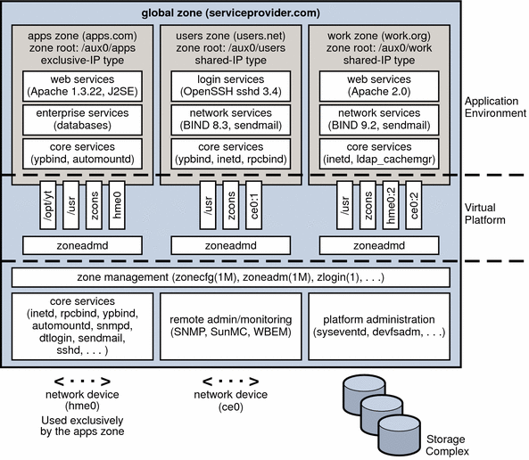

Previous
Previous
Introduction to Solaris Zones
The Solaris Zones facility in the Solaris Operating System provides an isolated environment in which to run applications on your system. Solaris Zones are a component of the Solaris Container environment.
This chapter covers the following topics:
If you are ready to start creating zones on your system, skip to Chapter 17, Non-Global Zone Configuration (Overview).
Note - For information on branded zones, see Part III, Branded Zones.
For information on using zones on a Solaris Trusted Extensions system, see Chapter 10, Managing Zones in Trusted Extensions (Tasks), in Solaris Trusted Extensions Administrator’s Procedures and Zones in Trusted Extensions in Solaris Trusted Extensions Transition Guide.
Zones Overview
The Solaris Zones partitioning technology is used to virtualize operating system services and provide an isolated and secure environment for running applications. A zone is a virtualized operating system environment created within a single instance of the Solaris Operating System. When you create a zone, you produce an application execution environment in which processes are isolated from the rest of the system. This isolation prevents processes that are running in one zone from monitoring or affecting processes that are running in other zones. Even a process running with superuser credentials cannot view or affect activity in other zones.
A zone also provides an abstract layer that separates applications from the physical attributes of the machine on which they are deployed. Examples of these attributes include physical device paths.
Zones can be used on any machine that is running the Solaris 10 or later release. The upper limit for the number of zones on a system is 8192. The number of zones that can be effectively hosted on a single system is determined by the total resource requirements of the application software running in all of the zones.
There are two types of non-global zone root file system models: sparse and whole root. The sparse root zone model optimizes the sharing of objects. The whole root zone model provides the maximum configurability. These concepts are discussed in Chapter 18, Planning and Configuring Non-Global Zones (Tasks).
When to Use Zones
Zones are ideal for environments that consolidate a number of applications on a single server. The cost and complexity of managing numerous machines make it advantageous to consolidate several applications on larger, more scalable servers.
The following figure shows a system with four zones. Each of the zones apps, users, and work is running a workload unrelated to the workloads of the other zones, in a sample consolidated environment. This example illustrates that different versions of the same application can be run without negative consequences in different zones, to match the consolidation requirements. Each zone can provide a customized set of services.
Figure 16-1 Zones Server Consolidation ExampleZones enable more efficient resource utilization on your system. Dynamic resource reallocation permits unused resources to be shifted to other containers as needed. Fault and security isolation mean that poorly behaved applications do not require a dedicated and under-utilized system. With the use of zones, these applications can be consolidated with other applications.
Zones allow you to delegate some administrative functions while maintaining overall system security.
How Zones Work
A non-global zone can be thought of as a box. One or more applications can run in this box without interacting with the rest of the system. Solaris zones isolate software applications or services by using flexible, software-defined boundaries. Applications that are running in the same instance of the Solaris Operating System can then be managed independently of one other. Thus, different versions of the same application can be run in different zones, to match the requirements of your configuration.
A process assigned to a zone can manipulate, monitor, and directly communicate with other processes that are assigned to the same zone. The process cannot perform these functions with processes that are assigned to other zones in the system or with processes that are not assigned to a zone. Processes that are assigned to different zones are only able to communicate through network APIs.
IP networking can be configured in two different ways, depending on whether the zone has its own exclusive IP instance or shares the IP layer configuration and state with the global zone. For more information about IP types in zones, see Zone Network Interfaces. For configuration information, see How to Configure the Zone.
Every Solaris system contains a global zone. The global zone has a dual function. The global zone is both the default zone for the system and the zone used for system-wide administrative control. All processes run in the global zone if no non-global zones, referred to simply as zones, are created by the global administrator.
The global zone is the only zone from which a non-global zone can be configured, installed, managed, or uninstalled. Only the global zone is bootable from the system hardware. Administration of the system infrastructure, such as physical devices, routing, or dynamic reconfiguration (DR), is only possible in the global zone. Appropriately privileged processes running in the global zone can access objects associated with other zones.
Unprivileged processes in the global zone might be able to perform operations not allowed to privileged processes in a non-global zone. For example, users in the global zone can view information about every process in the system. If this capability presents a problem for your site, you can restrict access to the global zone.
Each zone, including the global zone, is assigned a zone name. The global zone always has the name global. Each zone is also given a unique numeric identifier, which is assigned by the system when the zone is booted. The global zone is always mapped to ID 0. Zone names and numeric IDs are discussed in Using the zonecfg Command.
Each zone also has a node name that is completely independent of the zone name. The node name is assigned by the administrator of the zone. For more information, see Non-Global Zone Node Name.
Each zone has a path to its root directory that is relative to the global zone's root directory. For more information, see Using the zonecfg Command.
The scheduling class for a non-global zone is set to the scheduling class for the system by default. See Scheduling Class for a discussion of methods used to set the scheduling class in a zone.
Summary of Zone Features
The following table summarizes the characteristics of global and non-global zones.
Type of Zone | Characteristic |
|---|---|
Global |
|
Non-Global |
|
How Non-Global Zones Are Administered
A global administrator has superuser privileges or the Primary Administrator role. When logged in to the global zone, the global administrator can monitor and control the system as a whole.
A non-global zone can be administered by a zone administrator. The global administrator assigns the Zone Management profile to the zone administrator. The privileges of a zone administrator are confined to a non-global zone.
How Non-Global Zones Are Created
The global administrator uses the zonecfg command to configure a zone by specifying various parameters for the zone's virtual platform and application environment. The zone is then installed by the global administrator, who uses the zone administration command zoneadm to install software at the package level into the file system hierarchy established for the zone. The zoneadm command is used to boot the zone. The global administrator can then log in to the installed zone by using the zlogin command. At first login, the internal configuration for the zone is completed.
For information about zone configuration, see Chapter 17, Non-Global Zone Configuration (Overview). For information about zone installation, see Chapter 19, About Installing, Halting, Cloning, and Uninstalling Non-Global Zones (Overview). For information about zone login, see Chapter 21, Non-Global Zone Login (Overview).
Non-Global Zone State Model
A non-global zone can be in one of the following six states:
- Configured
The zone's configuration is complete and committed to stable storage. However, those elements of the zone's application environment that must be specified after initial boot are not yet present.
- Incomplete
During an install or uninstall operation, zoneadm sets the state of the target zone to incomplete. Upon successful completion of the operation, the state is set to the correct state.
A damaged installed zone can be marked incomplete by using the mark subcommand of zoneadm. Zones in the incomplete state are shown in the output of zoneadm list -iv.
- Installed
The zone's configuration is instantiated on the system. The zoneadm command is used to verify that the configuration can be successfully used on the designated Solaris system. Packages are installed under the zone's root path. In this state, the zone has no associated virtual platform.
- Ready
The virtual platform for the zone is established. The kernel creates the zsched process, network interfaces are set up and made available to the zone, file systems are mounted, and devices are configured. A unique zone ID is assigned by the system. At this stage, no processes associated with the zone have been started.
- Running
User processes associated with the zone application environment are running. The zone enters the running state as soon as the first user process associated with the application environment (init) is created.
- Shutting down and Down
These states are transitional states that are visible while the zone is being halted. However, a zone that is unable to shut down for any reason will stop in one of these states.
Chapter 20, Installing, Booting, Halting, Uninstalling, and Cloning Non-Global Zones (Tasks) and the zoneadm(1M) man page describe how to use the zoneadm command to initiate transitions between these states.
Table 16-1 Commands That Affect Zone StateCurrent Zone State | Applicable Commands |
|---|---|
Configured | zonecfg -z zonename verify zonecfg -z zonename commit zonecfg -z zonename delete zoneadm -z zonename attach zoneadm -z zonename verify zoneadm -z zonename install zoneadm -z zonename clone You can also use zonecfg to rename a zone in the configured or installed state. |
Incomplete | zoneadm -z zonename uninstall |
Installed | zoneadm -z zonename ready (optional) zoneadm -z zonename boot zoneadm -z zonename uninstall uninstalls the configuration of the specified zone from the system. zoneadm -z zonename move path zoneadm -z zonename detach zonecfg -z zonename can be used to add or remove an attr, bootargs, capped-memory, dataset, capped-cpu, dedicated-cpu, device, fs, ip-type, limitpriv, net, rctl, or scheduling-class property. You can also rename a zone in the installed state. The inherit-pkg-dir resources cannot be changed. |
Ready | zoneadm -z zonename boot zoneadm halt and system reboot return a zone in the ready state to the installed state. zonecfg -z zonename can be used to add or remove attr, bootargs, capped-memory, dataset, capped-cpu, dedicated-cpu, device, fs, ip-type, limitpriv, net, rctl, or scheduling-class property. The inherit-pkg-dir resources cannot be changed. |
Running | zlogin options zonename zoneadm -z zonename reboot zoneadm -z zonename halt returns a ready zone to the installed state. zoneadm halt and system reboot return a zone in the running state to the installed state. zonecfg -z zonename can be used to add or remove an attr, bootargs, capped-memory, dataset, capped-cpu, dedicated-cpu, device, fs, ip-type, limitpriv, net, rctl, or scheduling-class property. The zonepath and inherit-pkg-dir resources cannot be changed. |
Note - Parameters changed through zonecfg do not affect a running zone. The zone must be rebooted for the changes to take effect.